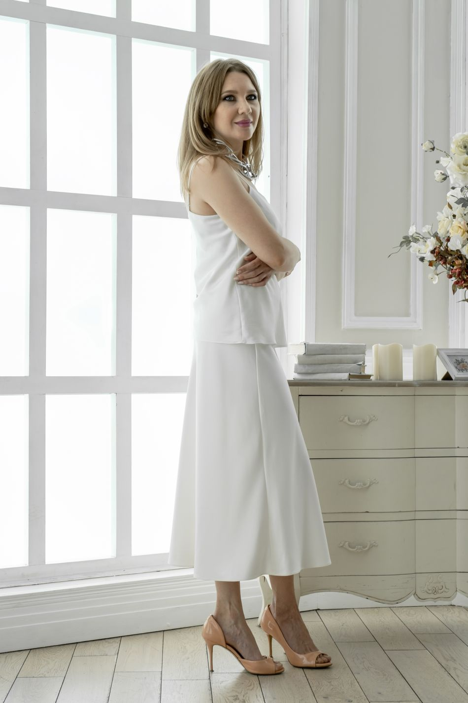

Elige tu prenda
Vestido, enagua, pantalón, blusa o traje de baño.
Imagina tu próxima prenda, explora materiales y descubre cómo se ve en el color que más te gusta. Nosotros la hacemos realidad.
Empieza a diseñar
THE ART OF WEARING YOUR IDEA — 2026Conoce nuestras familias de telas. Cada una tiene sus colores, texturas y personalidad.
* Catálogo inicial demostrativo. Confirma existencias y colores reales antes de publicar el inventario final.
Combina una prenda, un material y tu color favorito. Mira el resultado al instante.
La fotografía base muestra un modelo real de referencia. El color y el efecto textil se simulan digitalmente y pueden variar; no representan la prenda terminada ni sustituyen una muestra física. La cotización y la disponibilidad están sujetas a confirmación.
Vestido, enagua, pantalón, blusa o traje de baño.
Selecciona la tela, el color y los detalles que imaginas.
Pulsa «Cotizar» para enviar tu selección por WhatsApp.